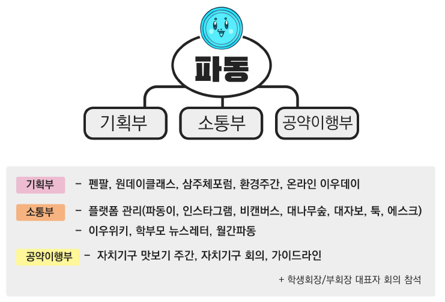

총학은 전 학년에 총학 멤버가 있고, 전 학년의 이야기를 하는 팀이다. 그래서 이우고 ‘학생’을 대표한다고 생각하면 편하다.
이우고등학교는 총학생회장과 부회장이 짝을 지어서 당으로 총학생회장 선거에 나간다. 당원들과 함께 OO당 같이 당의 이름을 지어 선거에 나간다. (선거 메이트제)
이 때 학생들은 당의 공약과 공청회를 보고 투표한다. 이렇게 뽑힌 총학은 지원서와 면접을 통해 총학부원을 뽑는다.
총학이 하는 일은 공약 이행, 총학생회장 선거관리위원회 모집, 대나무숲 관리, 이 외 학교 내 자잘한 일들 등이 있다.
매주 한 번씩은 회의가 있고, 총학의 임기는 1년이다.

2021년 기준, 이우고등학교 총학생회 이름은 '파동'이다. 그리고 기획부, 소통부, 공약이행부로 이어져 있다.